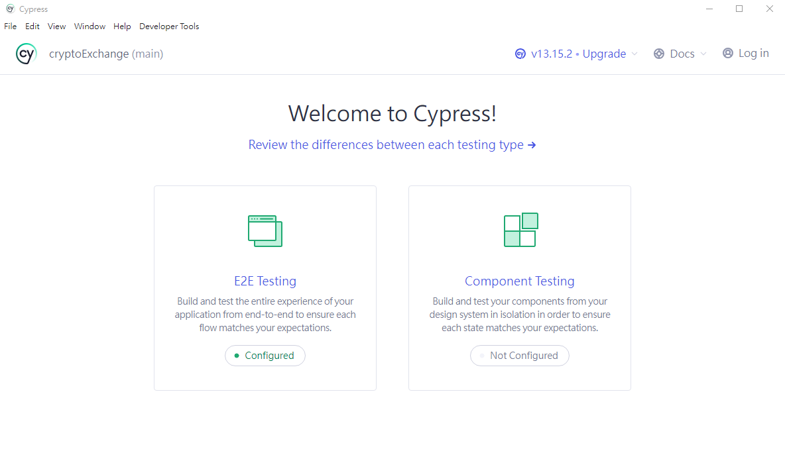
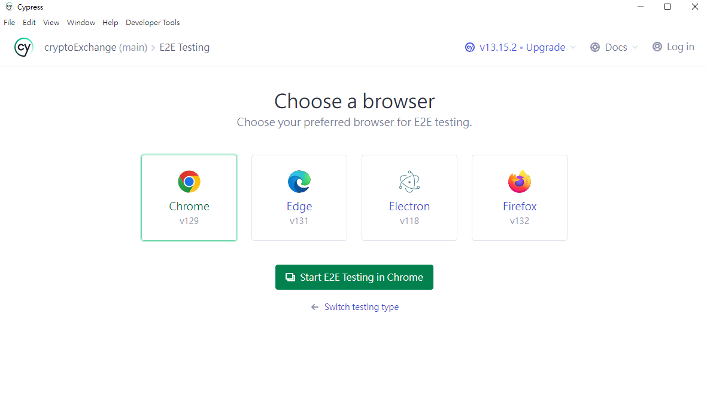
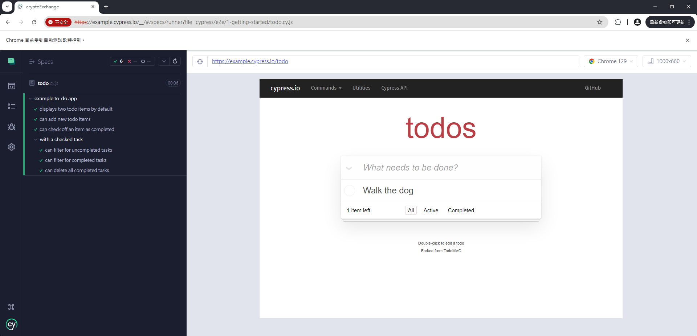

Cypress ─ 一款超強大的 E2E test framework
安裝
雖然 cypress 框架並不算小，但理論上 npm 一行指令便可以完成安裝。
npm install cypress --save-dev
為什麼我說理論上一行完成安裝呢？因為理想很豐滿，現實很骨感 QQ
實際上我在公司內網安裝時遇到了不少問題，例如：
防火牆問題
大部分的公司內網應該都有鎖防火牆，比較常使用的 registry.npmjs.org 想必早已經加入白名單了，但 cypress 不單單只是個 npm 套件這麼簡單，作為一套測試框架，他有自己的 app 需要下載 (這樣才有酷酷的 Web UI 可以使用)。
這就導致了你在執行 npm install cypress --save-dev 時，需要額外開通 https://download.cypress.io 的防火牆。
然而，你會發現狀況依然沒有改善。
原因是https://download.cypress.io會重導向至 https://cdn.cypress.io進行下載，因此你必須同時開通這兩個網域才行。
CA 憑證問題
如果你們公司有針對防火牆設定 CA 憑證，要注意 cypress 從版本 11 之後加上了對 CA 的認證，所有未經授權的 CA 都會被系統駁回。(詳情請見 change log)
Communication with the Cypress Dashboard will now verify CAs and reject any unauthorized calls. If you use a self-signed CA you will need to set npm_config_ca, npm_config_cafile, or NODE_EXTRA_CA_CERTS. Addresses #23980.
因此，當你執行 npm i cypress 時，會跳出 Error: self signed certificate in certificate chain 而無法成功下載 (災情請見這裡)。
解決方法有以下幾種：
在 npm config 加上 root CA:
執行npm config set cafile /path/to/cert.pem
或是在.npmrc內加上cafile=/path/to/cert.pem也是可以的 (.npmrc的優先級比較高)。在系統變數加上
NODE_EXTRA_CA_CERTS:
Linux:export NODE_EXTRA_CA_CERTS=path/to/cert.crt
Windows:set NODE_EXTRA_CA_CERTS=path/to/cert.crt
兩種方法則一即可。
另外，如果發現改了以後還是遲遲拉不下來，可以試著 npm cache clean --force 重新清除快取。
注意：如果你使用系統管理員身分下載，可能會因為 User 不同而使用到不同的 npm config (C:\Users\{YOUR_NAME}\.npmrc)，當然如果你專案底下有 .npmrc 可以避免這種問題，因為它的優先級會是最高的 (優先級可參考這篇文章)。
另外使用者不同，也會導致你的 Cypress.exe 被載入到不同的地方，以 Windows / Cypress 13.15.2 為例：執行檔安裝的預設路徑是 C:\Users\{YOUR_NAME}\AppData\Local\Cypress\Cache\13.15.2\Cypress\Cypress.exe，因此如果你下載跟執行的身分是不同使用者，會導致你 cypress open 找不到應用程式而開不起來，這點要多加注意。
安裝好了，然後呢...?
接著請在 package.json 加上:
"scripts": {
"e2e": "cypress open"
}
在 terminal 輸入 npm run e2e 妳就會看到:

點擊 e2e 後他會要妳選擇測試瀏覽器:

選完以後按下 Start 就會進到測試畫面了:

左邊就是它給你的範例測試，幫助你快速了解 syntax 跟測試方法，
使用手冊可看這裡。
是不是很簡單呢？接著趕快著手撰寫你的測試吧！
References
Github Issue: Error: self signed certificate in certificate chain
Github Issue: feat: add reject unauthorized to api server calls and standardize CA usage #24493